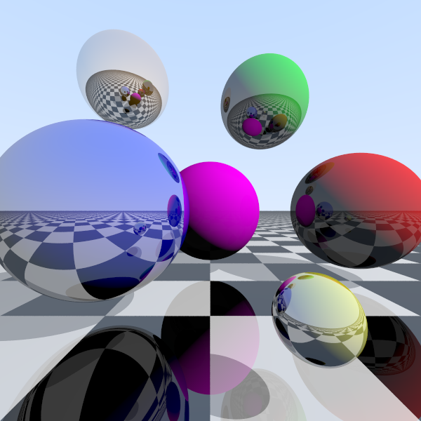

Inroduction
This Ray Tracer was a side/personal project I made during my Master’s degree (unrelated subject).
A C++ ray tracer rendering spheres and a checkered floor with realistic lighting and reflections.
Goal of the Project
The main goal of this project was to deepen my understanding of computer graphics and rendering techniques by implementing a basic ray tracing algorithm from scratch.
In my first year of my Bachelor's degree I had a subject on ray tracing. We made a super simple ray tracer in JS/HTML that could render spheres with basic colours and lighting.
This project was an opportunity to revisit and expand upon those concepts, exploring more advanced features and optimizations.

Why did I want to make a Ray Tracer?
Making a ray tracer during my Master’s degree sounds counter intuitive as it is unrelated to my field of study. However,
I have always been fascinated by computer graphics and rendering techniques.
And of course it looks super cool to see a program you made render realistic images from scratch.
Structure
Using C++, I structured the ray tracer into several key components:
- Vector and Ray Classes: Fundamental classes to represent 3D vectors and rays in space. Overloaded operators for vector math operations.
- Sphere Class: A class to represent spheres, including position, colour, size and reflectiveness. This allows me to define and manipulate spheres in the scene easily.
- Rendering Loop: The main loop that casts rays from the camera through each pixel, calculates color based on intersections, lighting, and reflections, and outputs the final image.
- PPM Output: Outputing all pixel colours in a ppm file format and viewing it from an online ppm viewer.
Key Features
- Gamma-corrected output for accurate colors: Gamma correction ensures that the colors in the final image are displayed accurately on different monitors and devices.
- Anti-aliasing via multiple rays per pixel (SPP): This one feature allowed me to make the output look much smoother and super high quality.
By averaging the colors from multiple rays per pixel, the jagged edges and noise are significantly reduced, resulting in a cleaner and more visually appealing image.
The only downside is that it increases the rendering time proportionally to the number of samples per pixel (100 rays per pixel).
- Procedural checkered floor: Adding a procedural checkered floor to the scene gave a better visual appearance to the scene and a clearer sense of depth.
- Diffuse lighting with shadows: This feature allows for realistic shading and depth perception in the rendered scene.
- Recursive reflections on spheres and floor: Once I added recursive reflections, the scene instantly looked more realistic and visually appealing.
At the moment, the reflections are limited to a maximum depth of 3 to avoid infinite recursion.
Possible Future Improvements
- Glossy / blurry reflections.
- Refraction & transparent materials.
- Multiple lights & light types.
- Enhanced anti-aliasing (stratified/jittered sampling)
- Texture mapping on spheres and planes
- More complex objects (triangles, meshes, OBJ support)
- Global illumination / path tracing
- Camera effects (depth of field, motion blur, adjustable FOV)
- Optimizations & performance (BVH, multithreading, GPU acceleration)
- User controls / interactive scene
- Post-processing effects (tone mapping, exposure, bloom)
- Improved class structures
Back to main page